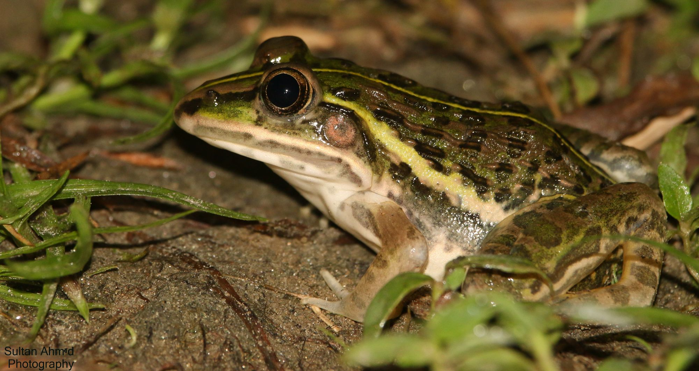

.jpg)

.jpg)
| Class | Order | Family |
|---|---|---|
| Amphiabia | Anura | Dicroglossidae |
It is the largest frog in Bangladesh. The snout-vent length of a mature male is 65-80 mm, while the gravid female is 75-121 mm. Newly hatched tadpole is 5-7 mm. Adults are about 250-300 g. Dorsal of the body is greenish, light brown or yellowish with black or brown spots. Males are brighter than female and turns bright yellow during breeding season. A light mid-dorsal line runs from snout to vent. A series of longitudinal folds present at the dorsal surface of the body. Ventral part of the body is pale. Limbs consist of black crossbars. Black and yellow mosaic present at the back of the thigs. Toes are fully webbed, but fingers are free.
এটি বাংলাদেশে প্রাপ্ত সবচেয়ে বড় ব্যাঙ। একটি পূর্ণবয়স্ক পুরুষের স্নাউট-ভেন্ট দৈর্ঘ্য ৬৫-৮০ মিমি।এবং পূর্ণ বয়স্ক স্ত্রী ৭৫-১২১ মিমি। কম বয়সী বাঙ্গাচি ৫-৭ মিমি। প্রাপ্তবয়স্কদের ওজন প্রায় ২৫০-৩০০ গ্রাম। দেহের পৃষ্ঠদেশ সবুজ, হালকা বাদামী বা হলুদাভ কালো বা বাদামী দাগযুক্ত। পুরুষরা স্ত্রীদের চেয়ে উজ্জ্বল হয় এবং তারা প্রজনন ঋতুতে উজ্জ্বল হলুদ হয়ে যায়। একটি হালকা মধ্য-পৃষ্ঠীয় রেখা মাথার শীর্ষ (snout) থেকে পশ্চাৎদেশ (vent) পর্যন্ত বিস্তৃত।শরীরের পৃষ্ঠীয় অংশে অনুদৈর্ঘ্য ভাঁজের একটি সিরিজ থাকে। শরীরের অঙ্কীয় অংশ ফ্যাকাশে। পায়ে কালো ক্রসবার থাকে। উরুগুলির পিছনে কালো এবং হলুদ মোজাইক উপস্থিত। পিছের পায়ের আঙ্গুলগুলি সম্পূর্ণভাবে জালযুক্ত, তবে সামনের পায়ের আঙ্গুলগুলো মুক্ত।
It consumes a variety of insects, as well as crabs, rodents, shrews, small birds, chicks, small snakes, skinks, and other small animals. Tadpoles eat insect larvae and algae. The main breeding season is from late May to early September, during the monsoon. It spends the majority of the day hidden under damp rubbish, bushes near water bodies, thickets near streams, or even under stones.
এটি বিভিন্ন ধরণের পোকামাকড়, সেইসাথে কাঁকড়া, ইঁদুর, চিকা, ছোট পাখি, ছোট সাপ, অঞ্জনি (skink) এবং অন্যান্য ছোট প্রাণী খায়। ব্যাঙ্গাচি পোকামাকড়ের লার্ভা এবং শেওলা খায়। প্রধান প্রজনন ঋতু মে মাসের শেষ থেকে সেপ্টেম্বরের প্রথম দিকে, বর্ষাকালে। এটি দিনের বেশিরভাগ সময় স্যাঁতসেঁতে আবর্জনার নিচে, জলাশয়ের কাছে ঝোপঝাড়, স্রোতের কাছাকাছি ঝোপঝাড়, এমনকি পাথরের নিচেও কাটায়।
Bangladesh, Afghanistan, India, Myanmar, Nepal, Pakistan, Sri Lanka
বাংলাদেশ, আফগানিস্তান, ভারত, মায়ানমার, নেপাল, পাকিস্তান, শ্রীলঙ্কা
Hoplobatrachus tigerinus can be found everywhere throughout Bangladesh, from brackish water zones in the south to ponds and puddles in the north and east. They are also found in Dhaka.
Hoplobatrachus tigerinus বাংলাদেশের সর্বত্র দেখা যায়, দক্ষিণে লোনা জলের অঞ্চল থেকে শুরু করে উত্তর ও পূর্বে পুকুর এবং অন্যান্য জলাশয় পর্যন্ত। রাজধানি ঢাকাতেও পর্যাপ্ত পরিমাণে এদের দেখা যায়।